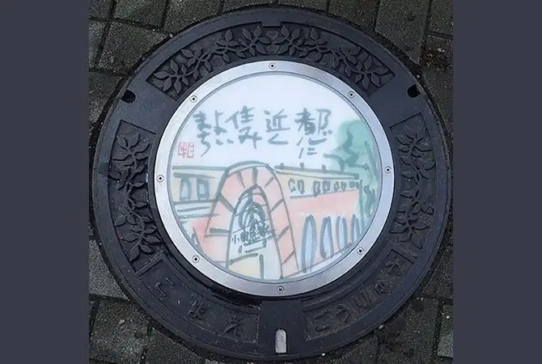

Japan / Tokyo / Komae
Komae · Tokyo
Komae
Highlighted on the Tokyo map.

Komae City Hall
(E Tegami) Dezainmanhoru
Komae, Tokyo · Official / source link
Nearby in Tokyo: ← Kokubunji · Koto →
Other towns: Adachi · Akiruno · Akishima · Aogashima · Arakawa · Bunkyo · Chiyodaku · Chofu · Chuoku · Edogawa · Fuchushi · Fussa · Hachijo · Hachioji · Hamura · Higashikurume · Higashimurayama · Higashiyamato · Hino · Hinode · Hinohara · Inagi · Itabashi · Okutama · Katsushika · Kitaku · Kiyose · Kodaira · Koganei · Kokubunji · Koto · Kozushima · Kunitachi · Machida · Meguro · Mikurajima · Minatoku · Mitaka · Miyakemura · Mizuho · Musashimurayama · Musashino · Nakano · Nerima · Niijima · Nishitokyo · Ogasawara · Ome · Oshima · Otaku · Setagaya · Shibuya · Shinagawa · Shinjuku · Suginami · Sumida · Tachikawa · Taito · Tama · Toshimaku · Toshimamura
All towns in Tokyo · Back to all prefectures